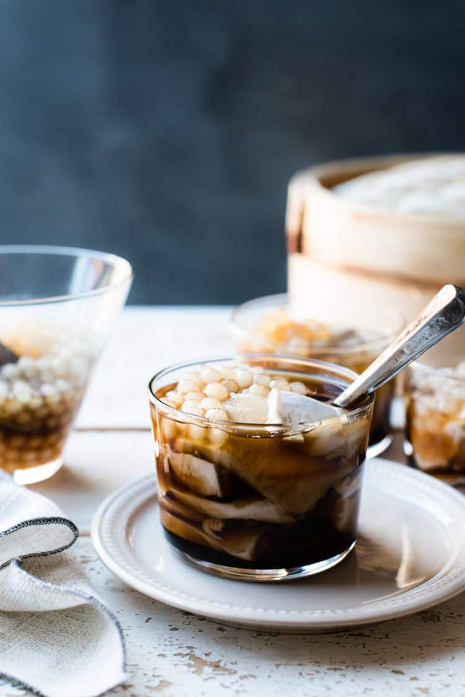

Taho

Taho is a classic sweet treat in the Philippines made with silken tofu, sago or tapioca pearls, and a simple brown sugar syrup. Served warm, it’s popular as a comforting breakfast or merienda (snack) any time of the day!
Ingredients
- 16 oz silken tofu
- 1 1/4 cups brown sugar
- 1 cup water
- 1 teaspoon vanilla
- 1 cup tapioca or sago pearls
Steps
- Bring a large pot of water to a boil. Cook the tapioca pearls according to your package instructions. This can be done in advance; just be sure to store the prepped pearls with some water or a little brown sugar syrup (next step).
- Combine the brown sugar, water, and vanilla in a small saucepan and place over medium-high heat. Bring to a boil, stir to dissolve the sugar, and lower heat to a simmer. Continue simmering for about 2-4 minutes and remove from heat. This syrup, or arnibal, can also be made in advance.
- Place silken tofu in a parchment lined steamer. Steam for 10-15 minutes, or until heated through. Alternatively, you can microwave the tofu for about 2-5 minutes.
- To serve, scoop slices of warm silken tofu into a small cup. Top with tapioca or sago pearls. Pour hot brown sugar syrup (arnibal) on top. Serve immediately, while warm.
Back to main page